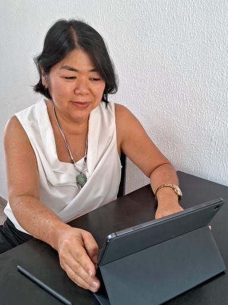
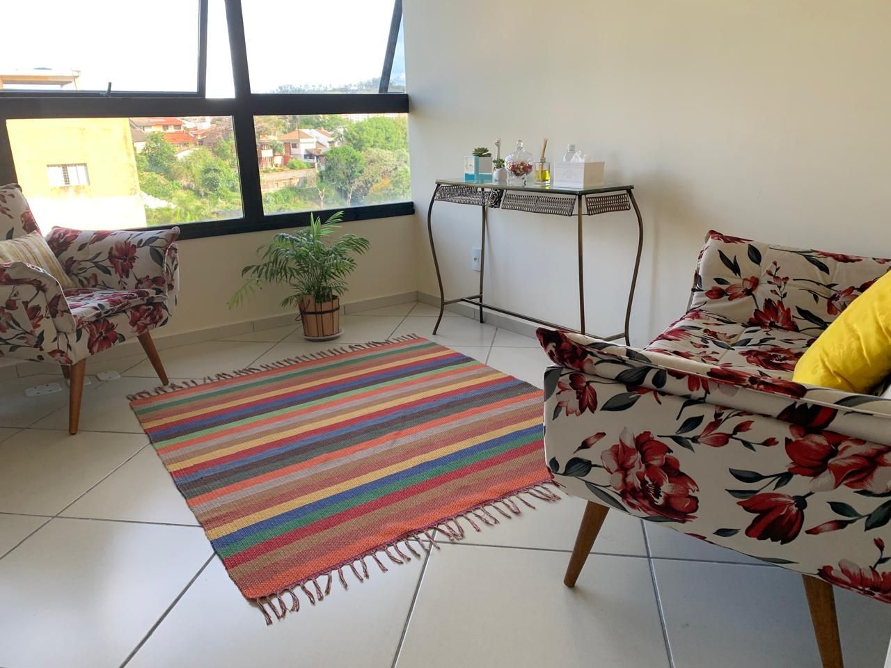
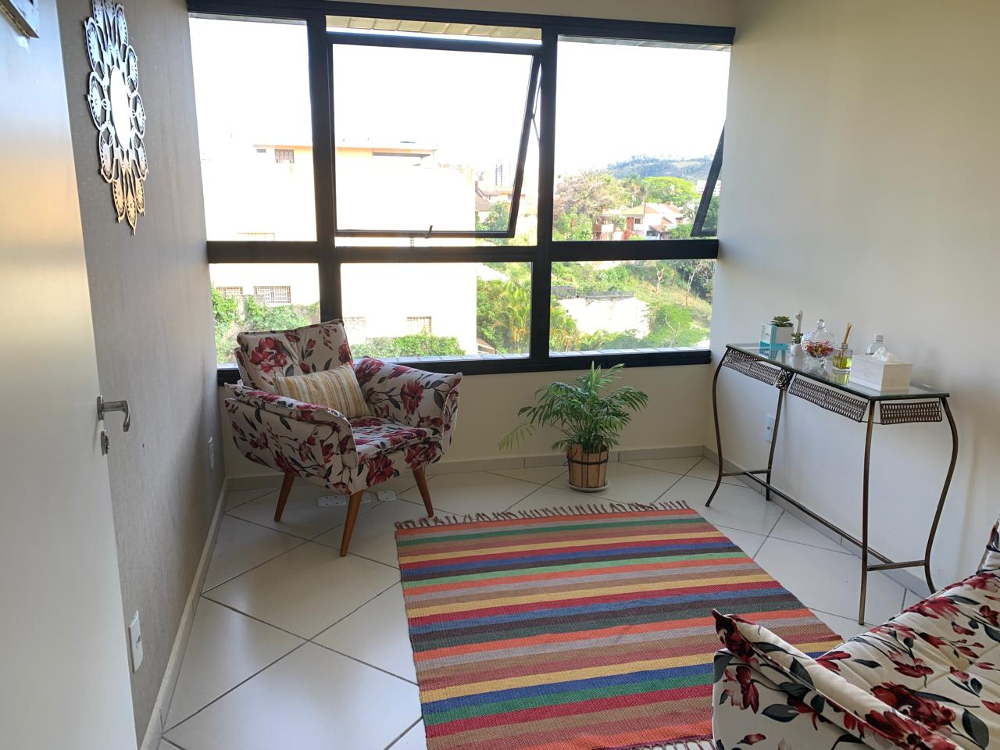
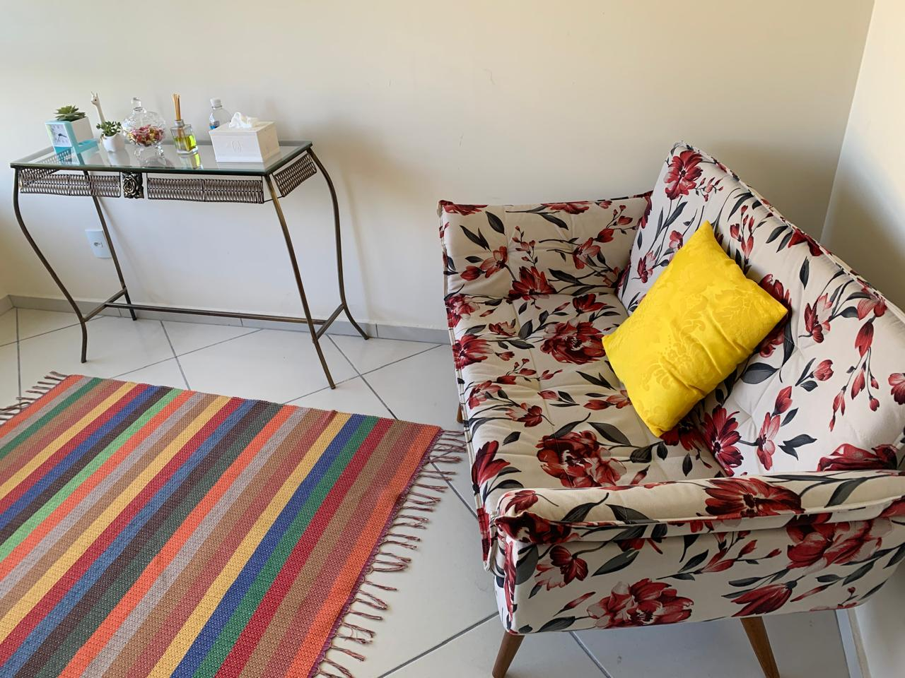

Inicie o quanto antes a mudança que você merece!
Atendimento psicológico presencial em Jundiaí-SP e online para brasileiros em qualquer lugar do mundo!
Psicoterapia individual
SOBRE MIM
Olá, sou Lucia Tomita, psicóloga clínica, e atuo na área do desenvolvimento humano há mais de 22 anos. Realizo atendimentos psicológicos individuais a crianças, adolescentes, adultos e idosos. Meu consultório fica no bairro Jardim Santa Adelaide, em Jundiaí-SP. Sou filha de imigrantes japoneses, bilíngue (português/japonês), graduada em Psicologia, com especialização em Psicologia Clínica no Japão e em formação em Terapia Cognitivo-Comportamental (TCC). Minha prática é pautada na ética, empatia e escuta qualificada, com base na abordagem da TCC e na psicoterapia breve, por meio de atendimentos presencial e online. Agora que você conhece um pouco da minha trajetória, fico à disposição para conhecer a sua e caminhar ao seu lado nesse processo de autoconhecimento e transformação.

+7000
Horas de Aperfeiçoamento na Prática Clínica
+22
Anos de Experiência
DEPOIMENTOS
Pessoas reais, mudanças reais. Veja alguns depoimentos dos meus atendimentos.
Todos os depoimentos foram previamente autorizados conforme nota técnica 01/2022 do Conselho Federal de Psicologia.
COMO TE AJUDO

Psicoterapia Individual
A psicoterapia individual é um processo terapêutico profundo e transformador, que tem como objetivo auxiliá-lo a compreender melhor suas emoções, pensamentos e comportamentos. Através de uma escuta especializada, empática e ética, ofereco suporte humano e personalizado, respeitando o seu ritmo e as suas necessidades. Na primeira sessão, identificaremos as suas principais demandas e definiremos juntos os objetivos e metas do seu processo terapêutico. A psicoterapia pode trazer mudanças eficazes e duradouras, promovendo autoconhecimento, bem-estar emocional e qualidade de vida.
Psicoterapia Online
Ideal para quem tem rotina intensa, ou vive em outro país, ou vive em regiões isoladas, a terapia online oferece flexibilidade de horários, elimina deslocamentos e permite que você se cuide no conforto do seu espaço — seja em casa, no trabalho, ou em qualquer outro lugar. Com a mesma eficácia do atendimento presencial, você conta com um ambiente sigiloso, ético e acolhedor. Mais praticidade, sem abrir mão da qualidade no cuidado com sua saúde mental. É recomendável que se organize em um local privativo, que se sinta confortável e seguro para falar. Para garantir a qualidade da sessão, tenha uma boa conexão de internet e utilize fones de ouvido.
Psicoterapia Breve
A Psicoterapia Breve é uma abordagem terapêutica focada, com duração previamente definida, que busca promover mudanças significativas em um curto espaço de tempo. Seu diferencial está no trabalho centrado em um conflito psíquico específico, como crises, lutos, dificuldades nos relacionamentos ou momentos de transição. A Psicoterapia Breve é ideal para quem busca foco, intensidade e transformação em um tempo delimitado.
Psicoterapia Cognitivo Comportamental (TCC)
Psicoterapia Cognitivo-Comportamental é uma abordagem focada em identificar e transformar padrões de pensamento e comportamento que causam sofrimento. Baseia-se na ideia de que nossos pensamentos influenciam diretamente nossas emoções e ações. Com escuta atenta e estratégias práticas, trabalhamos juntos para transformar padrões que trazem sofrimento, promovendo mais equilíbrio, bem-estar e qualidade de vida no seu dia a dia.
DÚVIDAS
Aceita plano de saúde
Nossas consultas são particulares. No entanto, a maioria dos meus clientes tem plano de saúde e optam pelo atendimento particular, tendo o ressarcimento através do sistema de reembolso, um benefício regulamentado pela ANS (Agência Nacional de Saúde Suplementar). Após o pagamento, emito recibos e relatórios necessários para que você receba o reembolso pelo seu plano de saúde. O reembolso pode chegar a 100% do valor pago. Para descobrir o valor de reembolso com o psicólogo, consulte a central de atendimento do seu plano de saúde para mais informações. É um direito seu escolher por quem vocẽ quer ser atendido! E a quantidade de sessões é ilimitada.
Horário de funcionamento
De segunda a sexta das 9:00 às 21:00h, sábado das 9:00 às 12:00h. Cada sessão tem entre 50 a 60 minutos de duração. Os atendimentos devem ser previamente agendados por telefone ou whatsapp.
Público atendido
Atendo adolescentes, adultos, idosos e a brasileiros que moram fora do Brasil.
Como funciona a psicoterapia?
Na psicoterapia individual você receberá uma atenção exclusiva e personalizada. De modo geral, a psicoterapia acontece de forma presencial ou online, com sessões semanais de 50 a 60 minutos. No entanto, esses acordos podem ser ajustados conforme suas necessidade e possibilidades. Além da escuta e das intervenções durante a conversa, o processo terapêutico pode incluir o uso de avaliações psicológicas caso necessário, e sempre com sua concordância prévia. Quando necessário, o processo e o objetivo é previamente explicado, com clareza.
Formas de pagamento
O pagamento pode ser feito por pix e transferência bancária.
CONSULTÓRIO




Lucia Tomita
Psicóloga clínica
CRP 06/164901
FALE CONOSCO
 + 55 (11) 94264-2493
+ 55 (11) 94264-2493
 psicologa@luciatomita.com.br
psicologa@luciatomita.com.br
HORÁRIO DE ATENDIMENTO
Segunda a sexta 9:00 às 21:00h.
Atendimento somente com hora marcada.
CONSULTÓRIO
 Av. Pedro Blanco da Silva, 729 Jardim Santa Adelaide, Jundiaí-SP
Av. Pedro Blanco da Silva, 729 Jardim Santa Adelaide, Jundiaí-SP